OpenRouter or direct providers
Use one OpenRouter key across the full engine deck, or connect supported source-company APIs. Engines unavailable under the selected provider are clearly locked rather than failing silently.
Twenty-two AI engines. One command interface. Route work through OpenRouter or supported source-company APIs, organise conversations into Projects with searchable context retrieval, connect GitHub repositories directly, switch models without rebuilding your workflow, and listen to responses through your choice of professional text-to-speech provider.
Think Fox combines multiple providers with persistent conversations, Projects, GitHub repo access, project context retrieval, reusable memory, direct search, document handling, image generation, multi-provider text-to-speech, and branching workflows inside one browser-based interface.
Use one OpenRouter key across the full engine deck, or connect supported source-company APIs. Engines unavailable under the selected provider are clearly locked rather than failing silently.
Organise conversations into Projects inside Workplaces. Assign, move, filter, and archive. Each Project holds its own memories, context index, retrieval mode, and optional GitHub connection.
Connect a Project to a GitHub repository using a fine-grained PAT. Browse the tree, sync files into project context, generate patches, and commit updates with SHA-guarded diff confirmation. Tokens never leave your browser.
Index conversations into searchable chunks. On each message, Think Fox scores and retrieves relevant context from other Project conversations, memories, and synced GitHub files — within a strict token budget.
Upload text, code, data files, or PDFs. Think Fox extracts readable content locally in the browser and attaches it to the relevant message without requiring a document server.
Use OpenRouter search or query Tavily, Brave Search, or a configured SearXNG instance. Results are added as labelled reference context before the engine responds.
Switch into image mode on supported OpenAI and Google routes. Generated images are rendered inline and stored with the conversation in the local Think Fox library.
Play assistant responses aloud using Deepgram, OpenAI, ElevenLabs, or MiniMax. Choose the provider, voice, model, speed, and output settings that suit the task.
Keep a user profile, pinned memories, Project memories, reusable prompt templates, and reference documents. Context can be searched, categorised, backed up, and injected only when useful.
Edit a message without destroying what followed. Think Fox preserves the original path, creates a new branch, and lets you move through the conversation tree.
Built-in diagnostics panel shows system state, storage estimates, stale items, and orphan records. One-click repair tools fix broken references and export emergency backups.
Export entire Workplaces — conversations, Projects, memories, context index, canvas, attachments, and settings — as a single JSON file. Import into any browser. GitHub tokens are never exported.
Each engine keeps its own callsign, colour, model mapping, capabilities, default parameters, and concise system prompt. v0.7.7.7 adds Supercell for Z.ai GLM 5.3, keeps Supercell pure white, and updates Tempest to pearl silver, Dagger to medium silver, and Citadel to gunmetal grey.
Fast general reasoning, coding, drafting, image input, and everyday tasks.
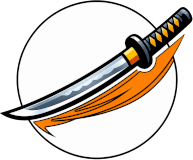
Large-context general work with preserved reasoning, vision, and tools.
Deep reasoning, coding, and tool-assisted work for difficult multi-step problems.
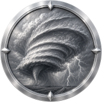
Pure-white Command Core engine for GLM 5.3, long-context reasoning, coding, project planning, and agentic workflows.
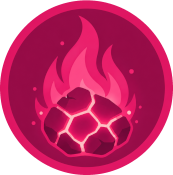
Large-context reasoning, coding, tools, and multimodal input.
Executive analysis, structured writing, coding, and agent workflows.
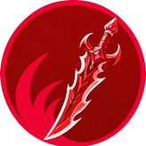
Sharp technical analysis, coding, agents, and multimodal input.
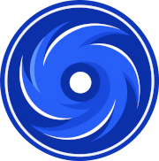
Rigorous technical reasoning, precise analysis, coding, and agents.
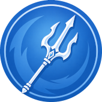
Specialist code generation, technical problem solving, and long-context engineering work.
Efficient reasoning, coding, multilingual work, and tool calling.
Nuanced reasoning, long-form writing, coding, images, and files.
Advanced reasoning, knowledge work, coding, images, and files.
Natural writing, precise analysis, coding, images, and files.
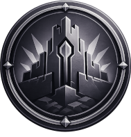
General reasoning, coding, tools, vision, files, and supported image generation.
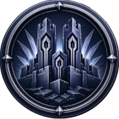
High-end OpenAI reasoning, coding, multimodal work, files, and tool use.
Deep multimodal reasoning, huge context, mixed media, and dense analysis.
Large-context multimodal reasoning, image understanding, files, audio, video, and supported image generation.
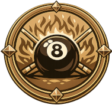
Creative and unconventional reasoning with vision, files, and tool support.
Heavy reasoning, planning, and agent orchestration.
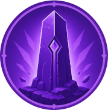
Multilingual reasoning, vision, files, coding, and tools.
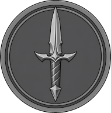
Direct, creative open-model work with a compact general-purpose footprint.
High-capacity open-model reasoning, creative work, and flexible voice.
OpenRouter mode exposes the complete twenty-two-engine deck through one account. Direct-provider mode uses the selected source-company API and automatically locks incompatible engines. Dagger and Harlequin remain OpenRouter-only.
Each provider adapter handles its own endpoint, authentication, request format, streaming events, usage data, and supported capabilities. Think Fox keeps the interface consistent while the routing layer deals with the differences underneath.
Different models are good at different work. Think Fox makes switching deliberate, visible, and useful.One interface · twenty-two engines · five divisions · your API routes
Bring an OpenRouter key for the complete twenty-two-engine deck, or connect supported direct-provider and text-to-speech accounts. Organise work into Projects, connect GitHub repositories, retrieve context from past conversations, generate images, search the web, work with documents, and listen to responses aloud—all from the same interface. Keys, tokens, and project data are stored locally in your browser, so use Think Fox on a trusted device.
Launch Think Fox →